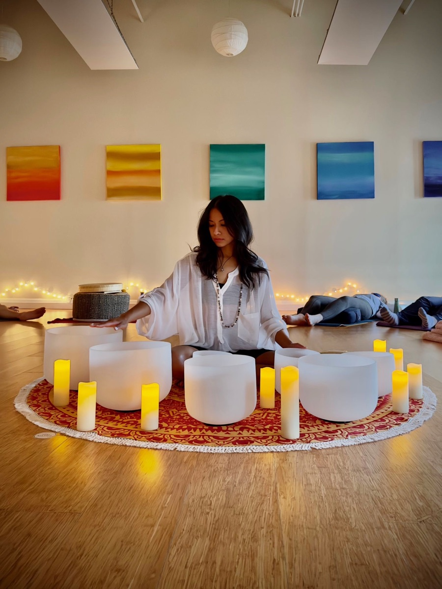

Sound Healing & Inner Reset
Restore your energy, settle your nervous system, and reconnect with yourself through sound, stillness, and spaciousness. A quiet hour to put down everything you've been carrying.

What it is
So much of feeling stuck isn't a thinking problem, it's a body that hasn't had a chance to settle. A sound session is a guided hour of rest, where layered tones and vibration help your system drop out of go-mode and into something slower and clearer.
You don't need any experience. You don't need to believe anything in particular. You just lie down, get comfortable, and let the sound do the work.
What it feels like
We start by letting your body arrive. Breath slows, shoulders drop, the running list quiets down.
Sound and vibration carry you into a deep, restful state, the kind of rest most days never make room for.
You come back softer and clearer, with a little more space between you and everything you were carrying.
Why people come
An open invitation
Whether you're stretched thin, between chapters, or just overdue for stillness, this is a soft place to land.